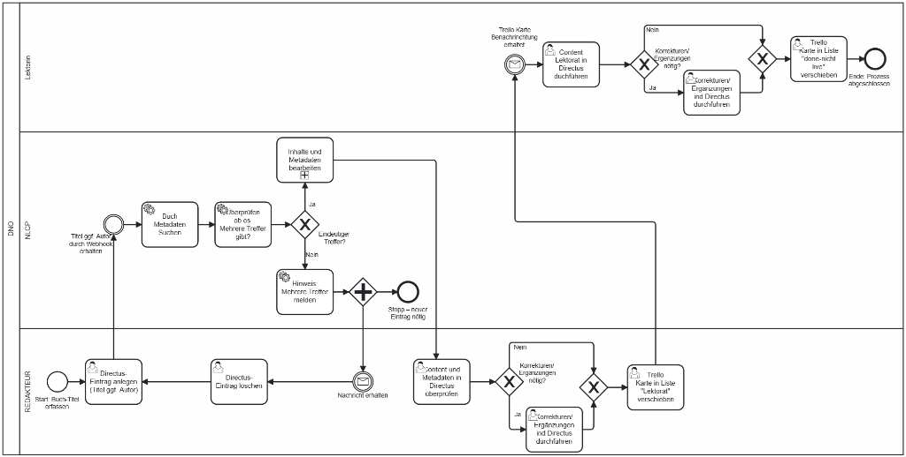

End-to-End Automation via Make.com
85% Time Red.
1.7 mo ROI
85% Cost Saving
🎯 Process Mapping (BPMN)
Before automation, the process was fragmented and manual. I mapped the "As-Is" and "To-Be" states to ensure a 100% logic coverage before implementation.

🛠️ Technical Implementation
The workflow uses advanced error handling and Claude/GPT API validation. This architecture ensures that 85% of the unit cost is saved while maintaining editorial quality.